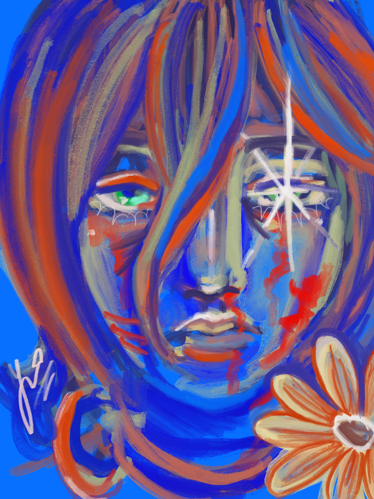

Poznaj autorkę stronki
O mnie
Jestem studentką na studiach licencjackich na Polsko Japońskiej Akademii Technik Komputerowych w Warszawie. Jestem na kierunku Grafika z wydziału Sztuki Nowych Mediów.
Strona ta to projekt zaliczeniowy na przedmiot Web Design dotyczący części moich zainteresowań związanych z japońską kulturą.
Ta strona powstała jako projekt, na którym chciałam zebrać absolutne perełki z gatunku horroru psychologicznego oraz dramatów survivalowych. Interesuję się również:
- Animacją 3D, 2D w filmach, serialach oraz grach wideo a także samymi grami komputerowymi
- Muzyką
- Rysunkiem i malarstwem
